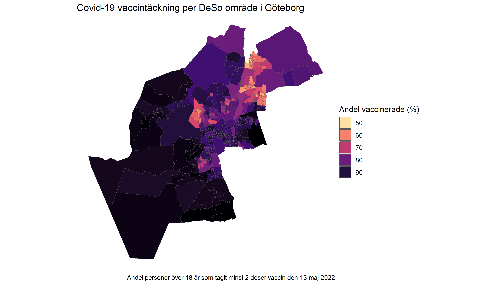
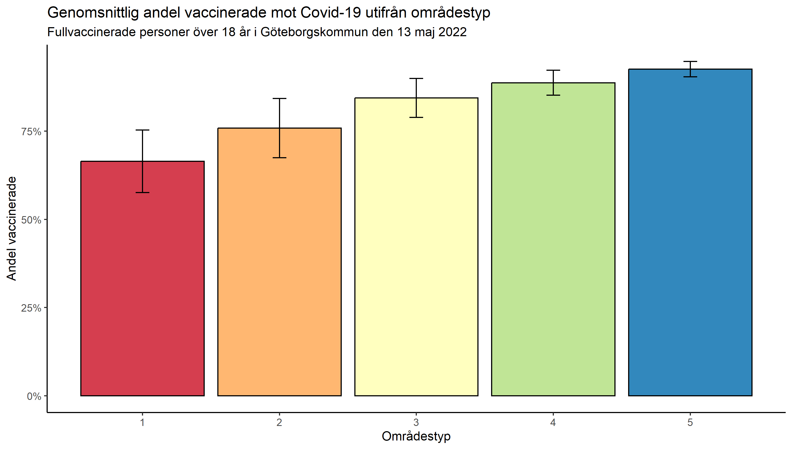
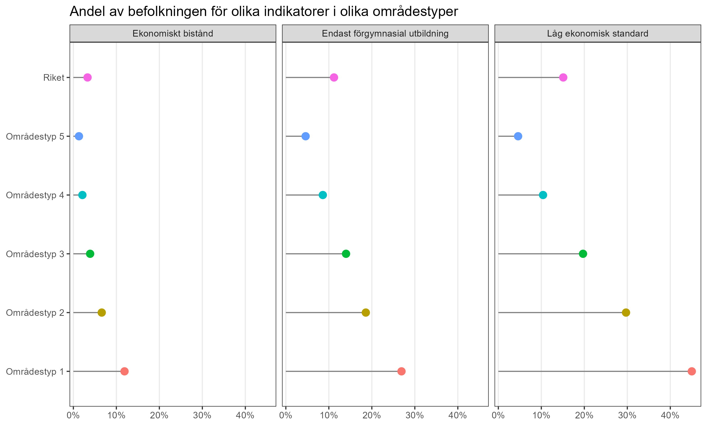

Precis innan covid-19 pandemin brakade loss läste jag Martin Holmbergs alldeles nyutgivna bok Pandemier och epidemier. I den hade han ett avsnitt som diskuterade beredskapsbegreppet. Det utgår oftast från en militär logik. Lagerhållning och kanoner. Andningsmasker och respiratorer.
Sen kom covid-19.
Sen kom invasionen.
Och nu ska nya beredskapsplaner skrivas.
Det minsta man kan begära att vi tittar tillbaka på hur pandemin utvecklade sig, och hur den slog mot olika delar av samhället i stort.
Förra inlägget berörde skillnader i vaccinationstäckning mot covid-19 mellan länder. Men skillnaderna är lika påtagliga inom ett land, inom en stad.
Kartan nedan visar vaccintäckningen för två doser i Göteborgs kommun i mitten av maj 2022. Vid det laget hade vaccin funnits tillgängligt för alla under en längre tid och tack vare vaccinet behövde covid-19 inte längre klassas som en samhällsfarlig sjukdom. Trots en massiv vaccinationskampanj så ligger de områden med lägst vaccintäckning i Göteborg i nivå med Myanmar och Tadzjikistan.
Figur 1. Vaccintäckning i Göteborgs kommun

Grupperar man varje enskilt område utifrån dess socioekonomiska förutsättningar framträder en tydlig gradient. De områden som präglas av stora socioekonomiska utmaningar ligger i snitt betydligt lägre i vaccinationstäckning jämfört med de mest välbeställda områdena.
Figur 2. Vaccintäckning i olika socioekonomiska områden. Felmarginalen visar en standardavvikelse från genomsnittet.

Det är SCB som gjort indelningen och definerar de olika områdena:
Områdestyp 1 – Områden med stora socioekonomiska utmaningar
Områdestyp 2 – Områden med socioekonomiska utmaningar
Områdestyp 3 – Socioekonomiskt blandade områden
Områdestyp 4 – Områden med goda socioekonomiska förutsättningar
Områdestyp 5 – Områden med mycket goda socioekonomiska förutsättningar
Vaccintäckningen hänger alltså tydligt samman med socioekonomi. På det individuella planet, ses även samma mönster, om än i en mer högupplöst skala. Sen tidigare är det känt att det har en påverkan på livet i stort var man bor och vilka som bor i samma område. Inom forskningen kallas det för grannskapseffekter, och ett exempel på detta är att en individs utbildningnivå påverkas av omgivningens utbildningsnivå. Inkomster, möjligheter att få jobb, och hälsa knyts också till områdets sociala miljö. Omvänt ses exempelvis att tilliten till andra människor, både allmänt och i närområdet, är högre i områden utan socioekonomiska utmaningar. Bostadssegegrationen har en lång historia i Sverige, men utvecklingen sedan 1970-talet har sammantaget gjort att åtskillnaden av olika befolkninggrupper fått en allt tydligare geografisk dimension, se figur 3.
Figur 3. Ojämlikhetens geografi

På det hela framstår det som att Sverige klarat sig igenom pandemins första faser relativt bra, men skillnaderna som ses inom landet är påtagliga. Holmberg lyfte fram att en mer relevant del av en verklig beredskap handlar om att ha ett starkt samhälle. För är det något covid-19 pandemin visat så är det att beredskap inte kan hållas isär från vårt kanske största beredskapspolitiska problem, som är vår välfärd. Det är inte bristen på vaccin, eller bristande tillgänglighet eller kommunikation som är förklaringen till skillnaderna i vaccinationstäckning (och i förlängningen sjukdom och död). Frågan kan inte hållas åtskild från nedmonteringens haveri.
Frågan om samhällig motståndskraft gäller överlag för alla typer av kriser, oavsett om det gäller pandemier, klimatet eller hotet om krig. Något som de fackliga organisationerna nu också uttrycker. “Pandemin var ett prov som vårdivarna, regioner och kommuner, i många delar inte klarade (…) Om regioner och kommuner inte klarar att följa lagen till vardags i ett normalläge, eller under en pandemi, hur kommer då vården att fungera i en krigssituation?”
Holmbergs poäng var att tydliggöra kopplingen mellan välfärd och motståndskraft. Beredskap är att stärka de eftersatta delarna med breda sociala reformer. Han konstaterade vidare att den typen av politiska prioriteringar inte väcker någon större opinion i samtiden, och därför fortsätter vi att planera på det symboliska planet. Kanoner och lager.